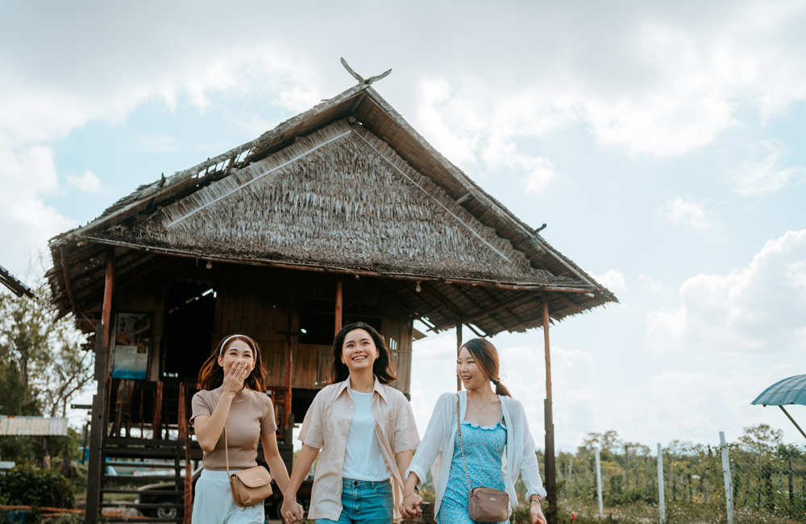

INTRODUCTION TO THE COMMUNITY
{kind=link}
{kind=link}
{kind=link}
Tuaran is located on Sabah's West Coast, 32 km from the state capital, Kota Kinabalu. Tuaran is well-know for its fried 'Tuaran Noodles', and people, especially Sabahans, would come all the way to Tuaran only to try it.Tuaran's population is mostly composed of Dusun, Lotud, and Bajau ethnic groups. Tuaran's inhabitants are recognized for its rich cultural history and traditions, and they are proud of their local rituals and festivals. Tuaran is a popular tourist destination for those interested in experiencing local culture and customs.
Community Feature
Sabah's population is made up 33 indigenous groups that communicate in over 50 languages and 80 ethic dialects. The community and the people in Sabah are a big part of the Malaysian hospitality in the state. Tuaran District is located on the West Coast of Sabah, Malaysia, with the main population consisting of ethnic Dusuns of the Lotud ethnic subgroup and Bajau descent.
{kind=link}
The majority of the Dusun Lotud population resides in the districts of Tuaran and Tamparuli. Traditionally, the Dusun Lotud are farmers who grow padi (rice). Rice is fundamental to their beliefs, customs, and traditions. The Dusun Lotud way of life is guided and controlled by their belief system, which includes how they build their homes. The majority of the resources used to build the Dusun Lotud home are round logs, rattan for tying, and plank wood for flooring and walls.
{kind=link}
Set off on a quest to discover more about Tuaran - Land of Linangkit. Visit Tuaran's local attractions, which showcase the beauty and culture of the ethic. Locations include Chanteek Borneo, Rumah Terbalik, Tamparuli Tamu, Rumah Bajau Samah, Borneo Ant House, Tong Hup Lee Pottery Factory, and Pagoda Ling San.
{kind=link}
Cycle to Tuaran village and learn about the local customs and traditions. Discover how to make local munchies and traditional cigarattes. Dance to the traditional music of one of the numerous local ethnic tribes and their instruments. Get an opportunity to photograph traditional clothing and the wedding altar.
{kind=link}
Immerse yourself in nature by taking a traditional wooden catamaran out to observe the spectacular Bornean sunset and the fireflies that illuminate the night sky.